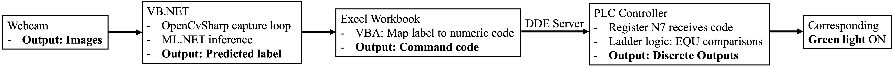
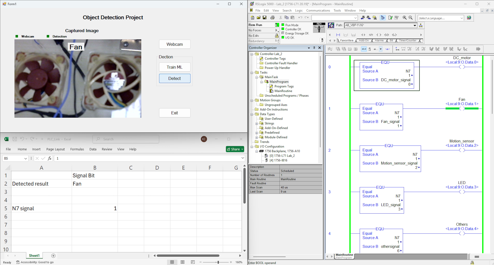

Real-time machine vision
Captures webcam images and performs object classification through a VB.NET application using OpenCvSharp and ML.NET.
Industrial Automation · Computer Vision · Engineering Education
An Industry 4.0 automation system that connects real-time machine-vision classification to PLC-based industrial control, while making the complete perception-to-control pathway visible and teachable in a hands-on undergraduate laboratory.
Project Overview
The system integrates webcam acquisition, a VB.NET/OpenCvSharp machine-vision application, ML.NET classification, an Excel/VBA supervisory mapping layer, and PLC ladder logic. A predicted object label is converted into a command code that is transferred to the PLC, where discrete outputs are activated through ladder-logic comparisons.

Captures webcam images and performs object classification through a VB.NET application using OpenCvSharp and ML.NET.
Maps the predicted class label to a numeric command code through the Excel/VBA supervisory interface.
Transfers the command code into PLC logic, where equality comparisons drive corresponding discrete outputs.
Keeps each stage of the perception-to-control pathway visible so students can inspect and troubleshoot the complete workflow.
Packages the concept as hands-on instructional material suitable for a four-year undergraduate engineering laboratory curriculum.
Demonstration

Educational Context
The project was developed not only as a technical integration exercise, but as a set of instructional materials for teaching how machine vision, machine learning, supervisory software, and PLC control interact in one automation workflow. The laboratory sequence is intended for a four-year undergraduate engineering curriculum and emphasizes implementation, observation, and debugging across system layers.
The public repository contains the laboratory handouts and source materials used to deliver the machine-vision/PLC integration concept in a hands-on undergraduate laboratory setting.
Explore More